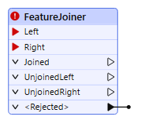
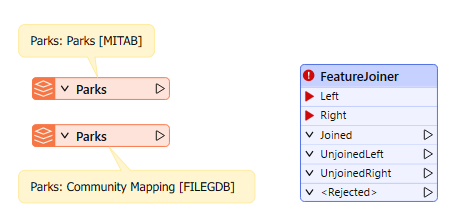
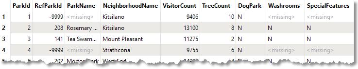
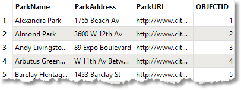
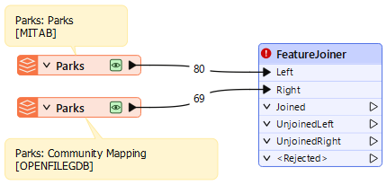
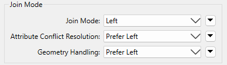
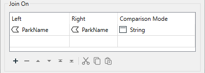
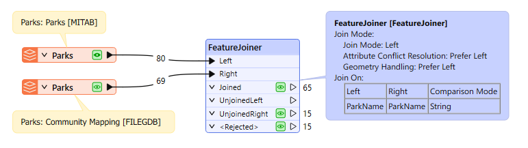
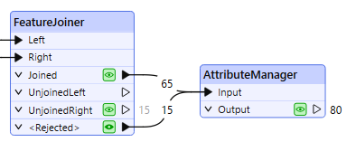
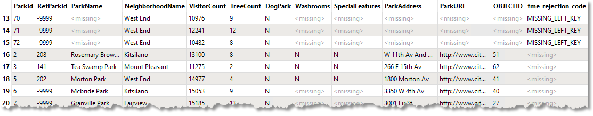

Learning Objectives
After completing this lesson, you’ll be able to:
- Add and connect a FeatureJoiner transformer.
- Configure a FeatureJoiner to conduct a left join.
- Inspect your data to ensure it has joined properly.
Instructions
In this lesson, you will:
- Scroll down to read the text below.
- Optional: You can view the video instead of reading the text. The video covers the text material.
- Complete the Quiz toward the bottom of the page.
- Optional: Let us know if you found this lesson relevant to your role by filling out the survey at the bottom of the page.
- Click 'Next' to mark the lesson complete.
Resources
Scenario
The Parks & Recreation department has asked Fatima to build a workspace to combine two park datasets into a single dataset. Currently, she has two datasets: one with park information and another with park addresses. These datasets share a common ParkName attribute. She wants to join them so all the park information is in one table.
She will use the FeatureJoiner to join two feature streams.

This example uses spatial data, but the procedure is the same regardless of whether the data is spatial. Remember, if you have the data to be joined in a database, consider using the DatabaseJoiner or DatabaseQuerier instead.
1) Open Starting Workspace
- Start FME Workbench (2026.1 or later).
- Open the starting workspace (C:\FMEData\Workspaces\TransformAttributes\join-tables.fmw).

Initial workspace reading in Parks.tab and the Parks table from CommunityMapping.gdb
This workspace joins a parks MapInfo TAB dataset with a Parks table from a community mapping geodatabase.
- Run the workspace.
- Inspect the source data.
- The Parks geodatabase table contains addresses and a URL for each park that she wants to join to the Parks.tab dataset.
- She will use ParkName to join the two tables.

Parks MapInfo Tab table [MITAB]

Parks table from CommunityMapping File Geodatabase [OpenFileGDB]
2) Connect the FeatureJoiner
- Connect the Parks [MITAB] feature type to the Left input port on the FeatureJoiner.
- Connect the Parks [OPENFILEGDB] to the Right input port.

Both Park datasets connected to the FeatureJoiner transformer
3) Configure the FeatureJoiner
- In the FeatureJoiner parameters, set the Join Mode to Left.
- Set the Attribute Conflict Resolution and Geometry Handling parameters to Prefer Left (the default).

FeatureJoiner Join Mode Parameter, all set to Left
- In the Join On table, set Left to ParkName and Right to ParkName.
- Of course, when joining it's preferable to use a UUID of some kind, but the name of the park is the best we can do with this data.
- Change the Comparison Mode to String.
- It should work with Automatic, but it's better to be explicit.

Join On parameter set to ParkName for both Left and Right and the Comparison Mode set to String
4) Run Workspace and Inspect
- Run the workspace with data caching enabled.

65 Joined records, 15 UnjoinedRight records, and 15 <Rejected> records
- Observe the record counts: there are 65 Joined records, 15 Unjoined records from the right table, and 15 Rejected records.
- Click on the data cache icon on the Rejected port to inspect the records in Data Preview.
- Looking at these records, we can see they are tiny unnamed parks that were built to create traffic-calming areas.
- Since they are unnamed, they can’t be joined, but we still wants to keep them even though they were rejected; the Parks & Recreation department wants them in the final dataset.
5) Append Records
- Add an AttributeManager and connect it to both the Joined and Rejected output ports on the FeatureJoiner.
- The only purpose of adding the AttributeManager is to show that both the joined and rejected records will continue through the rest of the workspace.
- Rerun the workspace with data caching enabled
- Inspect the AttributeManager's Output data cache.
- There are 80 records, and the named and unnamed parks are included in the table.

AttributeManager connected to the Joined and <Rejected> output ports on the FeatureJoiner

The Joined and <Rejected> features shown in the Data Preview.
Leave Us Feedback on This Lesson